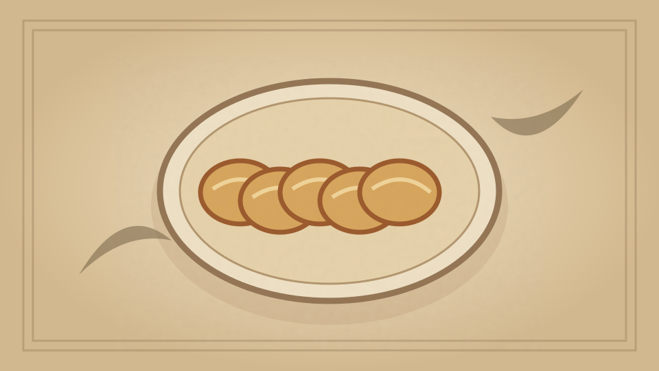

1910 · Fannie Merritt Farmer · BREAD AND BREAD MAKING
Tomato Cream Toast
The Boston Cooking-School Cook Book
❧ ───── ❦ ───── ❧

Historical Recipe
The following text is extracted from the 1910 edition, retaining historical terminology and quantities.
Original Ingredients & Directions
1½ cups stewed and strained tomato
½ cup scalded cream
¼ teaspoon soda
3 tablespoons butter
3 tablespoons flour
½ teaspoon salt
6 slices toast
Put butter in saucepan; when melted and bubbling, add flour, mixed with salt, and stir in gradually tomato, to which 69 soda has been added, then add cream. Dip slices of toast in sauce. Serve as soon as made.
Automatically extracted transcription; editorial verification pending. Historical instructions may not meet modern food-safety standards.